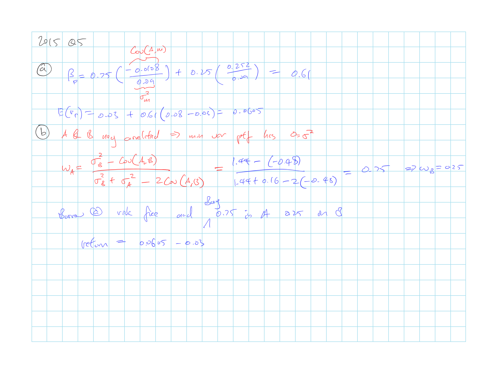
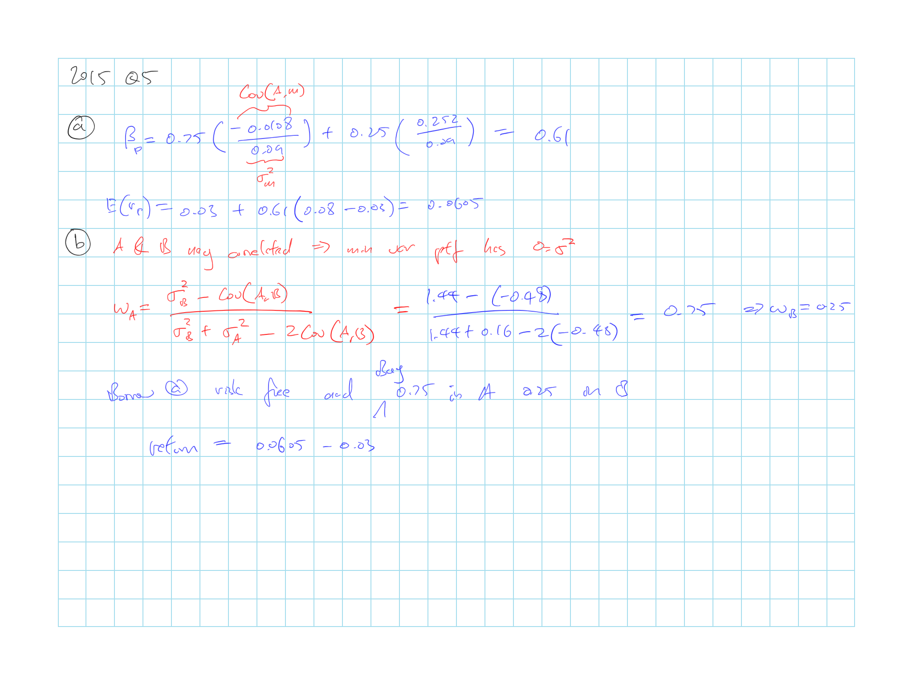

Module 5 A4 BKM9: Capital Asset Pricing Model
Z. Bodie, A. Kane, A. Marcus
5.1 Cliff’s Summary
Know the CAPM assumptions
Normative (test assumptions) and positive (examines prediction) model testing
Be familiar of the CAPM proof
SML (and compare to CML)
CAPM test and caveats to the results
CAPM Extensions
Zero \(\beta\)
- Slopt of \(SML_{zb} < SML_{reg}\)
Non-traded assets
Portfolio of traded assets that hedge the private business will be bid up \(\Rightarrow\) (-) \(\alpha\) under standard CAPM
Labor intensive firms will have lower demand \(\Rightarrow\) (+) \(\alpha\) in traditional CAPM
Multiperiod CAPM
Hedge portfolios on the additional sources of risk to arise from longer horizon will be bid up
- Assets that have higher return during periods of adverse economic environment will be bid up
- Bid up prices of assets that hedge the increases in prices of consumption goods (inflation protection)
Consumption CAPM
Assets with (+) covariance with consumption growth (higher payoff when consumption is already high) are viewed as riskier \(\Rightarrow\) Risk premium higher
\(\operatorname{E}[R_i] = \beta_{iC}RP_C\)
Liquidity Adjustment
Demand additional return on liquidity risk
Can be adjusted with liquidity \(\beta\) that reflects the sensitivity of the return of the security to changes in market liquidity
5.1.1 Types of Exam Questions
Haven’t done TIA practice questions
Concepts
- 2002, Q11: meaning of the \(\beta\)
- 2003, Q11: draw stock with (+) \(\alpha\) with the SML
- 2004, Q5: CAPM assumptions
- 2004, Q7: zero \(\beta\) CAPM
- 2008, Q3: Interpretation of plot of XS stock return vs XS market and also variability around the line
- 2010, Q4: CAPM assumptions on wealth, tax, human capital (ignored, not public), future cash flow expectations(homogenous), portfolio selection (MV optimizers)
- 2011, Q3: \(\alpha\) should center around 0 in a bunch of stocks
- \(\star\) 2013, Q4: impact of selling market portfolio and by single stock with \(\beta = 0.75\)
- Reduce systematic risk but significant increase non systematic risk, risk increase over all
- Expected return should fall as well as CAPM dictates that return only rewards systematic risk
- 2014, Q3: Empirical and implied SML and that for stock above the SML is a better buy
Calculations
- 2005, Q8: Calculate \(\beta\) based on quarterly return of stock and market
- 2005, Q12: back out numbers with CAPM
- \(\star\) 2006, Q6: Back out \(\beta\) then \(\alpha\) then SML
- Assume there is \(\alpha\) is the expected return is based on analysis
- Need to assume equal change of scenarios for the \(\alpha\) to make sense?
- \(\star \star\) 2015, Q4: Long questions
- Expected return
- Arbitrage with 0 variance portfolio
- \(\star\) 2015, Q5: zero beta CAPM, assumptions and properties
Plug and Play
- 2003, Q10: return of a portfolio (sum up the \(\beta\)’s)
- 2004, Q6: return of a stock with CAPM
- 2011, Q4: return of stock with CAPM
5.2 Introduction
CAPM
Shows the relationship between risk and expected return in equilibrium
Assumes:
All investors optimized portfolio using Markowitz procedure \(\Rightarrow\) Construct efficient frontier based on all available risky assets \(\Rightarrow\) Identify efficient risky portfolio P
Investors face an identical investable universe and same input list to construct efficient frontier \(\Rightarrow\) Same weights for each risky asset
Since market portfolio is based on the same risky portfolios, it will have the same weights \(\Rightarrow\) Investor will hold the market portfolio \(\Rightarrow\) CAL = CML
Mutual fund theorm: All investors hold a common risky portfolio, they would have no problem if all the stock in the market were replaced with shares of a single mutual fund holding the market portfolio
Key implications:
Market portfolio is efficient
Premium on a risky asset is \(\propto\) its \(\beta\)
5.3 CAPM Assumptions
Individual Behavior Assumptions
Investors are rational mean-variance optimizers
- Not concerned about correlation of asset return with inflation/ prices of consumption items
Single period planning horizon (can alter later)
Longer periods would result in extra-market risk factors
e.g. \(\Delta\) interest rates \(\downarrow\) income \(\Rightarrow\) Assets that can hedge this will be priced higher
Identical input list
- Implies that all information are public
There are many investors and they are all price takers
- Transactions have no impact on the price
Investors have homogeneous expectations
- Everyone’s analysis come to the same conclusion
All assets are publicly traded (can alter later) and short positions are allowed
- Assets have to be tradable for investors to be able to derive identical input list
Can borrow/lend at a common risk free rate (can alter later)
- Necessary for investors to derive the same tangency portfolio
All information is publicly available
No taxes
- Different tax rate \(\Rightarrow\) Different after tax rates on the same stock \(\Rightarrow\) Investor could derive different after tax optimal risky portfolio
No transaction costs
5.3.1 Assumptions Testing
Model Testing
Normative: test model assumptions
Positive: examines the predictions
Impossible to create a model consistent with the complexity of markets \(\Rightarrow\) CAPM is a simplification of reality
\(\hookrightarrow\) Ideally assumptions will be robust (outcome not highly sensitive to the violation of the assumptions)
5.3.2 Derivation of CAPM
Proved:
Contribution of an individual stock to the portfolio risk premium is \(w_i[\operatorname{E}[r_i]-r_f]\)
Contribution of an individual stock the portfolio variance is \(w_i \operatorname{Cov}(r_i, r_M)\)
Reward-to-risk ratio based on above:
\(\dfrac{\text{Contribution to Risk Premium}}{\text{Contribution to Variance}} = \dfrac{w_i[\operatorname{E}[r_i]-r_f]}{w_i \operatorname{Cov}(r_i, r_M)} = \dfrac{[\operatorname{E}[r_i]-r_f]}{\operatorname{Cov}(r_i, r_M)}\)
Reward-to-risk ratio for market portfolio is the market price of risk:
\(\dfrac{[\operatorname{E}[r_M]-r_f]}{\sigma^2_M}\)
In equilibrium all securities should have the same reward-to-risk ratio \(\Rightarrow\) reward-to-risk ratio for individual stock = market price of risk:
\(\begin{array}{ccc} \dfrac{[\operatorname{E}[r_i]-r_f]}{\operatorname{Cov}(r_i, r_M)} &= \dfrac{[\operatorname{E}[r_M]-r_f]}{\sigma^2_M} \\ \operatorname{E}[r_i] &= r_f + \beta_i [\operatorname{E}[r_M] - r_f] &\text{where } \beta_i = \dfrac{\operatorname{Cov}(r_i, r_M)}{\sigma^2_M} \\ \end{array}\)
5.3.3 Security Market Line
\(\beta\) measures the risk of the security
- Can be estimated by plotting XS return on stock vs XS return on market
- Intercept should be 0
Security Market Lines
Graphs relationship between \(\beta\) and \(\operatorname{E}[r]\) of a stock

alt text
SML vs CML
CML: Risk premium of efficient Portfolios vs \(\sigma\)
- \(\sigma\) is the appropriate risk measure for portfolios
SML: Risk premium of individual asseets vs \(\beta\)
- \(\beta\) is the appropriate risk measure for individual securities held as part of a well diversified portfolio
5.3.4 Testing CAPM
Impossible to construct market portfolio, so test the SML equation instead \(\operatorname{E}[R_i] = \beta_i R_M\)
Regression on the XS returns of a sample of stocks against their betas over time
\(R_{i,t} = \lambda_0 + \lambda_1 \beta_i + \lambda_2 \sigma^2(e_i) + \eta_{i,t}\)
CAPM predicts:
\(\lambda_0 = 0\) as the average \(\alpha = 0\)
\(\lambda_1 = R_M\) as the slope of SML = market risk premium
\(\lambda_2 = 0\) as the risk premium is only based on proportion of market risk premium
Estimate the \(\beta\) and residual variance for each stock from time series of stock return
Parameter estimates have large errors and may be correlated \(\Rightarrow\) Downward bias in \(\lambda_1\) and upward bias on \(\lambda_0\)
Might reject CAPM even if it is valid
- Returns simulated following CAPM but regression still indicates that CAPM does not hold
Parameters are time varying but the regression techniques does not recognize this
5.4 CAPM Extensions
Problematic assumptions:
No restrictions on short sales, but in reality it can be difficult to take short positions
All assets are tradable
No transaction costs
Single period horizon
However the extensions of CAPM are not perfect so none have superseded CAPM so far
5.4.1 Zero Beta CAPM
When investors face borrowing restrictions of risk free asset
\(\operatorname{E}[r_i] = \operatorname{E}[r_Z] + \beta_i \left[\operatorname{E}[r_M] - \operatorname{E}[r_Z]\right]\)
\(Z\) = zero-beta portfolio for M
Uncorrelated portfolio on the inefficient side of the minimum-variance frontier
Investors with borrowing restrictions will invest more in high \(\beta\) stocks and less in low \(\beta\) \(\Rightarrow\) \(\uparrow\) price of high \(\beta\) stocks
Slopt of \(SML_{zb} < SML_{reg}\)
Risk premium on the market portfolio is smaller as the \(\operatorname{E}[r_Z] > r_f\) so less reward for bearing risk
5.4.2 Non-Traded Assets
Some assets are tradable e.g. human capital and privately held business
- These are of significant values and can have a material impact on the equilibrium returns of traded securities
Privately held business
Privately held business w/ similar characteristics to traded assets:
Little impact to CAPM as owners can still achieve diversification by reducing their portfolio of other similar traded assets \(\Rightarrow\) Still holding market portfolioPrivately held business w/o similar characteristics to traded assets:
Portfolio of traded assets that hedge the private business will be up \(\Rightarrow\) \(\downarrow\) expected return \(\Rightarrow\) \(-\alpha\) in traditional CAPM
Human Capital
Only way to hedge is for employees to avoid purchasing share of their own employer \(\Rightarrow\) labor intensive firms will have lower demand \(\Rightarrow\) \(+\alpha\) in traditional CAPM
Adjusted CAPM for labor income:
\(\operatorname{E}[R_i] = \operatorname{E}[R_M] \dfrac{\operatorname{Cov}(R_i, R_M) + \frac{P_H}{P_M}\operatorname{Cov}(R_i, R_H)}{\sigma^2_M + \frac{P_H}{P_M}\operatorname{Cov}(R_M,R_H)}\)
\(P_H\): value of aggregate human capital
\(P_M\): market value of traded assets
Adjustment produce lower \(\beta\) so a SML with a less steep slope, which explain negative alpha of high beta securities indicated by some tests
5.4.3 Multiperiod CAPM
Intertemporal CAPM
Assume investors will optimize their consumption/ investment over their lifetime
ICAPM = CAPM when:
Only type of risk is the uncertainty about portfolio returns
Investment opportunities are constant over time
However, over the long run we expect additional sources of risk to arise and hedge portfolios will be bid up
Changes in the parameters that describe investment opportunities
- Investors will bid up prices of assets that have higher return during periods of adverse economic environment \(\Rightarrow\) lower expected return
Changes in the prices of consumption goods
- Investors will bid up prices of assets that hedge the increases in prices of consumption goods (inflation protection)
ICAPM with \(K\) sources of extramarket risk and \(K\) hedge portfolios:
\(\operatorname{E}[R_i] = \beta_{iM}\operatorname[R_M] + \sum_k \beta_{ik}\operatorname[R_k]\)
- \(\beta_{ik}\) is the \(\beta\) on the \(k\)th hedge portfolio
5.4.4 Consumption Based CAPM
Assume that in a period, investors need to allocate the current wealth between consumption today and savings/ investments to support future consumption
Optimal mix: utility from an additional dollar of consumption today = utility associated with the future consumption generated from the investment of that dollar
- Additional income from savings are more valued during tough economic times (w/ limited consumption opportunities) \(\Rightarrow\) Assets with (+) covariance with consumption growth (higher payoff when consumption is already high) are viewed as riskier \(\Rightarrow\) Risk premium higher
CCAPM:
\(\operatorname{E}[R_i] = \beta_{iC}RP_C\)
\(C\) is a consumption tracking portfolio, one with the highest correlation with consumption growth
\(\beta\) of market portfolio can be > 1
Disadvantages: consumption growth figures are published infrequently and with significant error
5.4.5 Liquidity Adjusted CAPM
Security prices should be discounted to reflect illiquidity
Standard CAPM ignores liquidity costs like bid-ask spread
Discount \(\uparrow\) as trading cost \(\uparrow\) but not proportional to the increase due to clientele effect
- Frequent traders hold more liquid assets and long term traders hold less liquid assets
Investor also demand additional return on liquidity risk (risk of unanticipated changes in liquidity)
- Can be adjusted with liquidity \(\beta\) that reflects the sensitivity of the return of the security to changes in market liquidity
 
